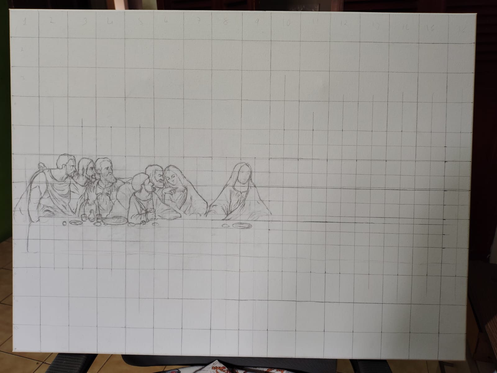
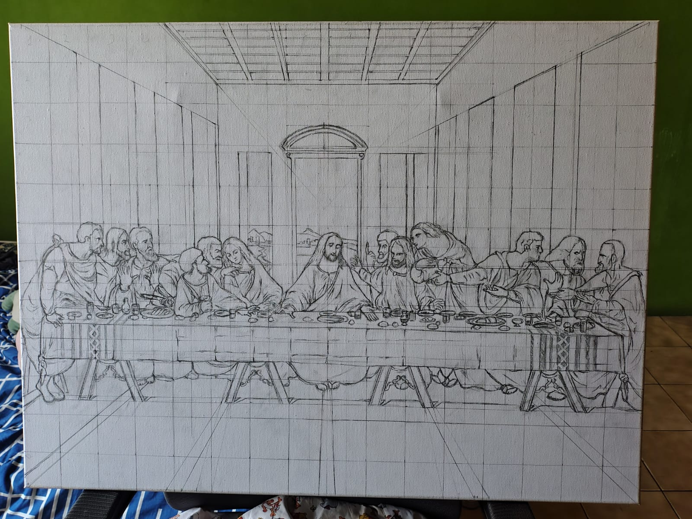
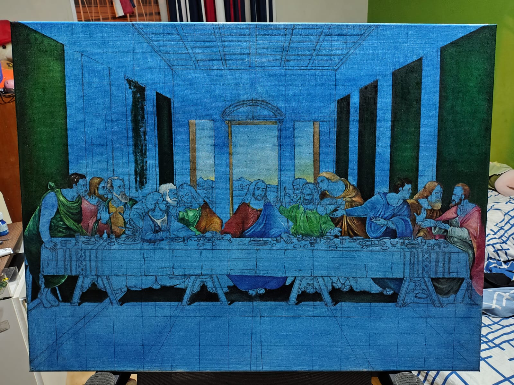
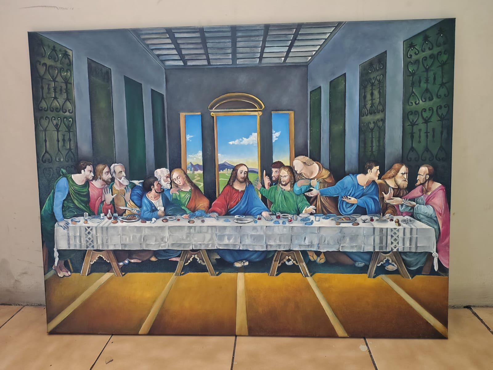

Bienvenido a mi portafolio
Sobre mí
Estudiante de Ingeniería de Software de Sexto Semestre.
Contexto
Lienzo al Oleo de la Ultima Cena
Desarrollo cronológico y aprendizajes
El desarrollo de la obra se realizó en varias etapas durante un mes de trabajo, cada una con sus propios problemas y aprendizajes.
El proceso comenzó con un detallado encaje geométrico a cuadrícula para garantizar la precisión anatómica y la perspectiva arquitectónica de la escena. A partir de un fodno base en tono azul, la obra se construyó por capas progresivas utilizando pigmentos Pebeo, modelando a pincel fino los pliegues de las túnicas, las expresiones individuales de los personajes y los detalles sobre el mantel.
Aprendí a trabajar con paciencia, la definicion de las personas, el uso correcto de las cuadriculas, Ademas mejore el uso de solventes, oleos, guesso y aceites.
Elaboración de la obra
Materiales Usados
- Pinceles
- Gesso
- Solvente sin olor
- Óleos Pebeo
- Paleta
- Espátula
- Acite de linaza
- Lienzo 80x60 cm
Pasos Seguidos para la Realización de la Obra
- Comence con la preparación del lienzo
- Segui con la cuadricula y el dibujo a lapiz de las personas
- Aplicación de la capa base de pintura diluida
- Procedi a pintar las ropas de las personas en el cuadro
- Segui pintando el fondo del cuadro con tonos grises y verdes
- Luego, aplique la pintura de las mesas y los platos
- Finalmente, aplique detalles y sombras para dar profundidad a la obra
La pintura es poesía muda y la poesía es pintura ciega.
Tabla de Datos Observados y Tiempos
| Estado de la Pintura | Pigmentos y Materiales Usados | Tiempo de Secado | Tiempo de Elaboración |
|---|---|---|---|
| Preparación de Lienzo | Gesso, Lijado | 12 - 24 horas | 2 días |
| Cuadrícula y Dibujo | Lápiz grafito, Regla | N/A | 3 días |
| Capa Base | Azul Cobalto, Solvente sin olor | 1 - 2 días | 2 días |
| Fondos y Arquitectura | Tierra de Sombra, Verde Vejiga, Blanco de Titanio | 3 - 4 días | 5 días |
| Ropajes y Túnicas | Rojo Cadmio, Azul Ultramar, Amarillo Ocre, Pebeo | 4 - 5 días | 7 días |
| Mesa, Mantel y Elementos | Siena Tostada, Blanco de Titanio, Pebeo | 3 - 4 días | 4 días |
| Detalles Anatómicose Expresiones | Pinceles finos, Mezclas de Tonos Carne, Pebeo | 4 - 5 días | 5 días |
| Veladuras y Luces Finales | Aceite de Linaza, Pigmentos puros Pebeo | 5 - 7 días | 2 días |
| Tiempo Total del Proyecto | 30 días | ||
Galería de Imágenes



